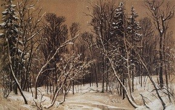
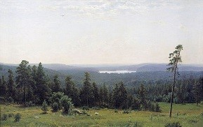
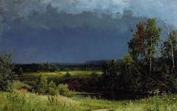
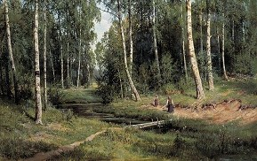
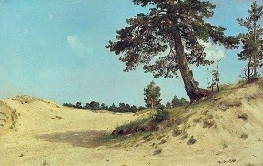
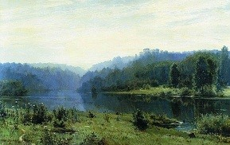
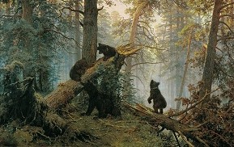

Зимний лес на рисунке И. Шишкина особенный, спящий. В нем словно остановилась жизнь: река почти полностью замерзла, деревья застыли, присыпанные снегом.
Передавая красоту раскидистых старых дубов, художник мастерски передает пластику их величественных и стройных форм. Мы видим вековые стволы, покрытые «морщинами» кору, пышные кроны, изогнутые ветви.


Леса тонут в сизоватой дымке утреннего тумана. А где-то возле горизонта видны поросшие хвойными лесами невысокие горные хребты.

Картина И. И. Шишкина “Перед грозой” одна из самых колоритных работ мастера. Художнику прекрасно удалось передать атмосферу густой духоты перед грозой.

Игра летнего солнца создает великолепный вид этого фрагмента. Чувствуется русский простор и таинство леса, по которому протекает ручей, питающий водой корни деревьев, устремленных ввысь к голубому небу.

Могучая старая сосна растет на песчаном косогоре, где и жухлая трава с трудом цепляется за бесплодную почву. Рядом в ее тени произрастает редкая молодая поросль.

Мы видим раннее утро на берегу широкой речки. Тяжелый утренний туман еще не рассеялся - голубоватой пеленой он закрывает от нас часть леса и берега реки на дальнем плане картины.

Забавный медвежонок, склонив голову набок, прислушивается к звукам пробуждающегося леса, которые доносятся из утреннего голубого тумана; медвежата играют на стволе поваленной бурей старой сосны; солнце чуть окрашивает первыми лучами верхушки деревьев.